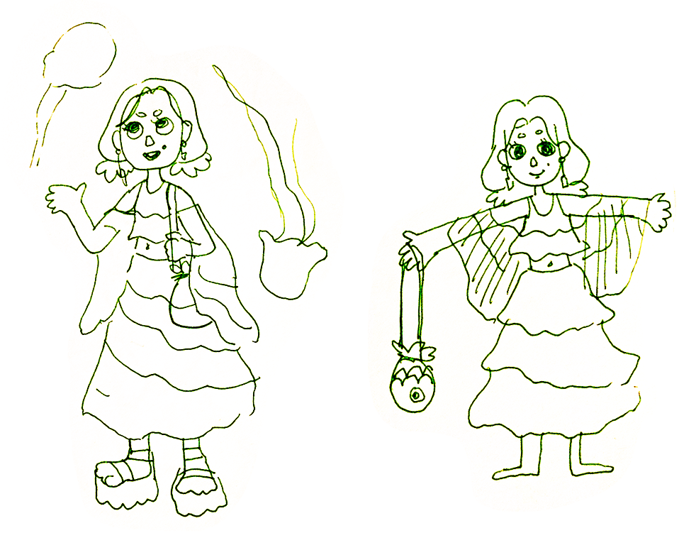
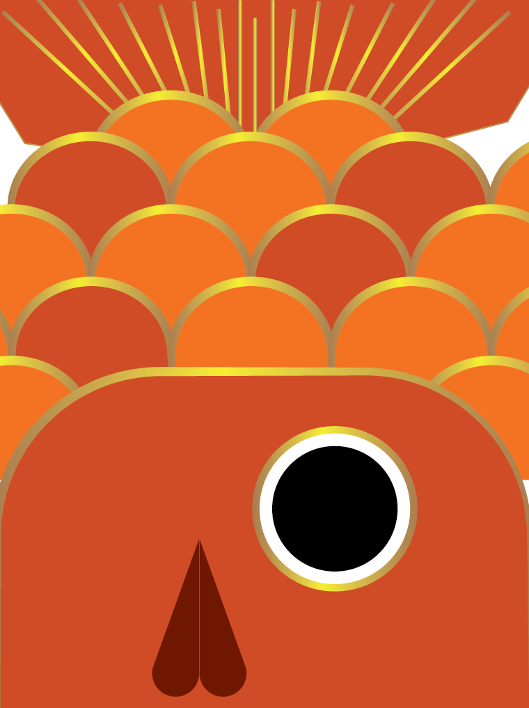

I visited Monteray Bay's Aquarium for the first time and was mesmerized by the jellyfish exhibit – especially the Lion's Mane Jellyfish. I imagined this character, the Jellygal, as a marine enthusiast. Adorned by summer garments reminiscent of a Lion's Mane's blooming oral arms, the Jellygal also clutches onto her goldfish crossbody bag.
Jellygal
Client: Personal Project
My Role: Designer, Animator, Textures, Character Development, Storyboard
Music: On the Island – Godmode
Visual Development

